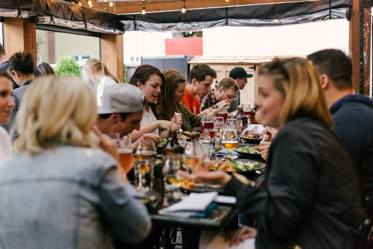
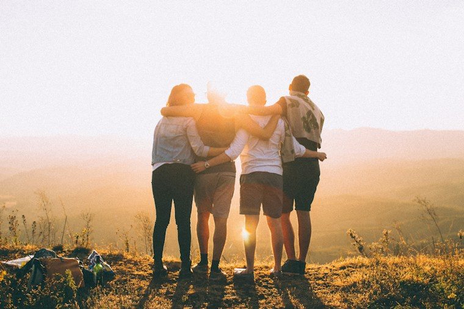

Inscrições abertas
Editais Abertos
Confira oportunidades para financiamento e apoio cultural.
Ver chamadasEditalks · Produtores
Conecte projetos, oportunidades e comunidades. Encontre editais, chamadas e eventos para fortalecer sua atuação cultural.
Chamadas e recursos para tirar projetos culturais do papel.

Inscrições abertas
Confira oportunidades para financiamento e apoio cultural.
Ver chamadas
Novas oportunidades
Conheça iniciativas e encontre possibilidades de colaboração.
Conhecer projetosEncontros locais
Descubra eventos, encontros e chamadas da sua região.
Ver agendaMostre seu trabalho, conecte-se com oportunidades e fortaleça a cultura na sua comunidade.
Manifestações e celebrações locais.
Aberta ao público, com instrumentos emprestados.
Encontro da comunidade na praça central.
Vivência coletiva para artistas e interessados.